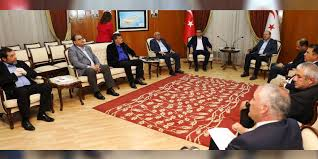

Yeni Ekonomi Paketi Görüşülüyor
TBMM Genel Kurulu’nda görüşülen yeni ekonomi paketi, enflasyonun düşürülmesine yönelik vergi indirimleri ve istihdam teşviklerini içeriyor. Muhalefet partileri tarafından önerilen düzenlemeler, sosyal yardımların kapsamını genişletmeyi hedefliyor. Görüşmelerin önümüzdeki hafta tamamlanması bekleniyor.
